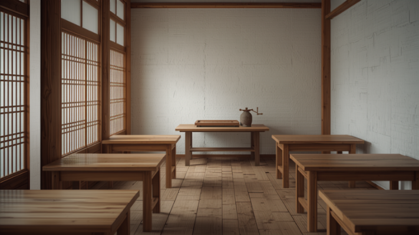

十割のおそば
石臼で挽いたそば粉を、つなぎを使わず十割で。香りと喉ごしをどうぞ。
JUWARI SOBA — KAWAGOE
お蕎麦は、すべて十割。
喜多院から歩いて4分の手打ちそば店です。
昼は15時ごろまで／夜は18時から｜水曜定休（ほかお休みの場合あり）
※2枚目以降の画像はイメージです
ABOUT
喜多院から歩いて4分、久保町の小さな手打ちそば店です。お出しするお蕎麦は、すべて石臼挽きの十割。薬膳（韃靼）そばもご用意しています。
揚げたての天ぷらと、昼飲みも大歓迎。「蕎麦の香りと風味をしっかり楽しめます」「天ぷらはサックサク」——地域の紹介記事でも、そう書かれるお店です。お昼どきは行列ができることもありますので、ゆとりを持ってお越しください。

香りと喉ごしの、十割を。
※画像はイメージです
SHOP INFO
| 店名 | 蕎麦.酒 十限無（じゅげむ） |
|---|---|
| 住所 | 埼玉県川越市久保町6-6 |
| アクセス | 喜多院から徒歩4分／西武新宿線 本川越駅 徒歩約15分 |
| 営業時間 | 昼は15時ごろまで／夜は18時から（詳しくはお電話で） |
| 定休日 | 水曜（ほかお休みの場合あり） |
| 電話 | 049-277-5752 |